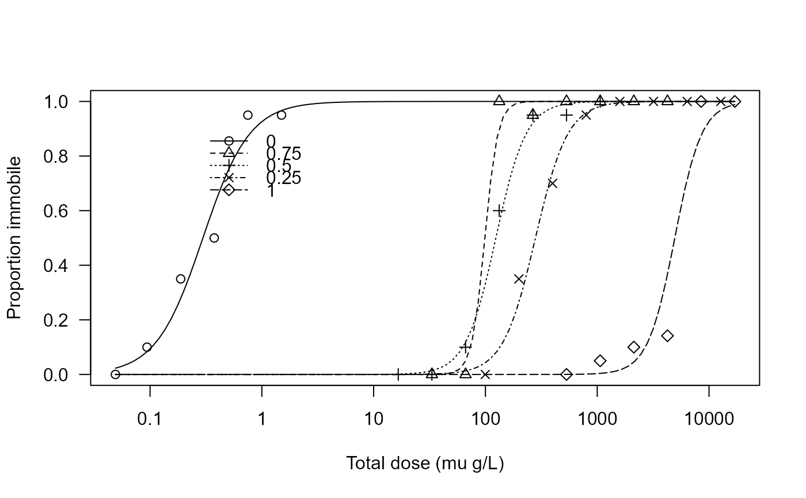

Daphnia
Daphnia.RdData are from a binary mixture experiment that was based on a fixed-ratio design involving 5 rays: the 2 rays for the pesticides prochloraz and alpha-cypermethrin and 3 mixture rays corresponding to virtual mixture proportions of 25:75, 50:50, and 75:25.
Usage
data(Daphnia)Format
A data frame with 140 observations on the following 6 variables.
dose.aDose of alpha-cypermethrin (mu g/L)
dose.pDose of prochloraz (mu g/L)
doseTotal dose in the mixture (mu g/L)
mix.fracMixture fraction
totalTotal number of Daphnia
immob48Number of immobile Daphnia after 48 hours
Details
Synergistic and antagonistic effects of binary mixtures between a number of fungicides and the pyrethroid insecticide alpha-cypermethrin were investigated using a standard test system. Only data for the specific binary mixture of prochloraz and alpha-cypermethrin are provided. Data were obtained from a Daphnia acute immobilisation test where the test organisms were divided into groups of five, placed in containers, exposed to a dose (either a mixture dose or a dose from one of the two pesticides), and followed for 48h.
References
Noergaard KB and Cedergreen N, Pesticide cocktails can interact synergistically on aquatic crustaceans. Environ Sci Pollut Res 17: 957-967 (2010). https://doi.org/10.1007/s11356-009-0284-4
Examples
library(drc)
## Displaying the data
head(Daphnia)
#> dose.a dose.p dose mix.frac total immob48
#> 1 1.50 0 1.50 0 5 5
#> 2 1.50 0 1.50 0 5 5
#> 3 1.50 0 1.50 0 5 4
#> 4 1.50 0 1.50 0 5 5
#> 5 0.75 0 0.75 0 5 5
#> 6 0.75 0 0.75 0 5 5
## Fitting a two-parameter log-logistic model for binomial response
## using mix.frac to model each mixture ray individually
Daphnia.m1 <- drm(immob48/total ~ dose, mix.frac, weights = total,
data = Daphnia, fct = LL.2(), type = "binomial")
summary(Daphnia.m1)
#>
#> Model fitted: Log-logistic (ED50 as parameter) with lower limit at 0 and upper limit at 1 (2 parms)
#>
#> Parameter estimates:
#>
#> Estimate Std. Error t-value p-value
#> b:0 -2.08226 0.35213 -5.9134 3.351e-09 ***
#> b:0.75 -7.47956 1.79255 -4.1726 3.012e-05 ***
#> b:0.5 -3.22760 0.60334 -5.3495 8.818e-08 ***
#> b:0.25 -3.00588 0.57382 -5.2384 1.620e-07 ***
#> b:1 -3.61417 0.72249 -5.0024 5.662e-07 ***
#> e:0 0.29705 0.03489 8.5139 < 2.2e-16 ***
#> e:0.75 98.81146 8.13182 12.1512 < 2.2e-16 ***
#> e:0.5 123.96886 12.82359 9.6672 < 2.2e-16 ***
#> e:0.25 280.08032 30.42243 9.2064 < 2.2e-16 ***
#> e:1 4941.86142 477.42984 10.3510 < 2.2e-16 ***
#> ---
#> Signif. codes: 0 '***' 0.001 '**' 0.01 '*' 0.05 '.' 0.1 ' ' 1
## Plotting the fitted curves for each mixture fraction
plot(Daphnia.m1, xlab = "Total dose (mu g/L)", ylab = "Proportion immobile",
ylim = c(0, 1), legendPos = c(3, 0.9))
